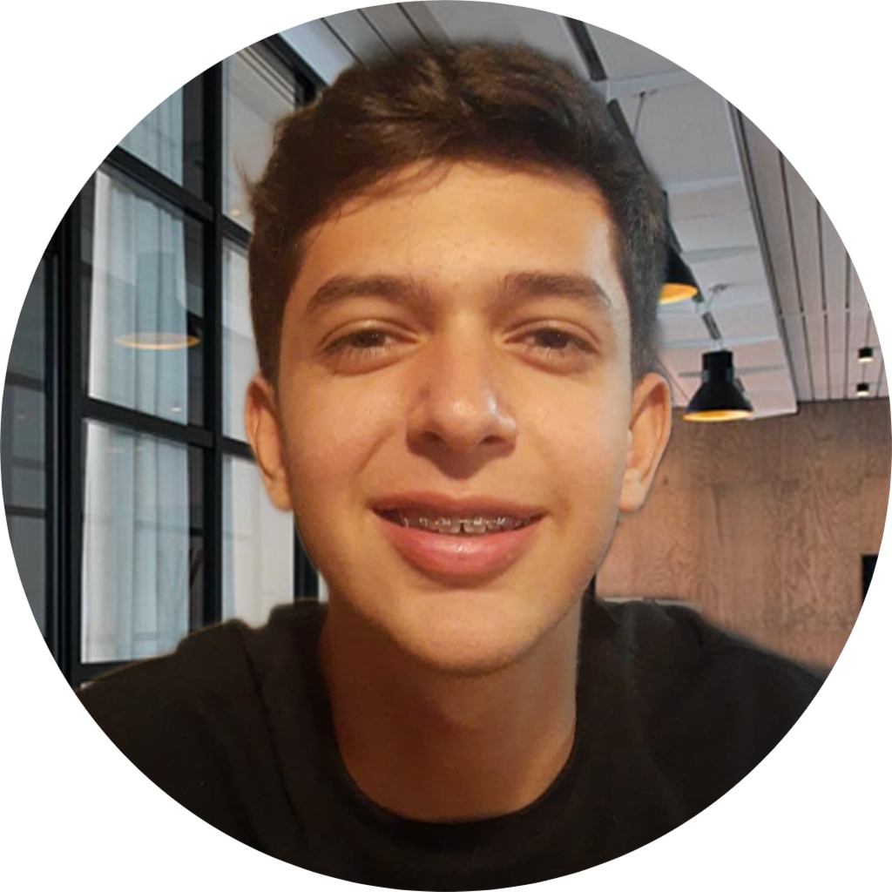

Murilo Gonçalves de Lima – 30/05/2008
Desenvolvedor
Somos três amigos que desenvolvemos um software de pré-diagnóstico de Esclerose Múltipla como nosso Trabalho de Conclusão de Curso (TCC) em 2025.
Lucas Marassi Cipriano Pereira – 10/08/2007
Desenvolvedor
Demos nosso melhor, e o trabalho recebeu muitos elogios e ideias de implementação de novas funcionalidades, ficamos muito felizes pelo feedback, o que compensou todo o nosso esforço.
Nicolas Lorena Pimentel – 30/05/2008
Desenvolvedor
Motivados pelo retorno positivo, resolvemos expandir o projeto e criar uma ferramenta acessível, que usa IA para interpretar diferentes tipos de exames e identificar possíveis doenças. Queremos que a tecnologia fale a língua das pessoas — simples, humana e feita para cuidar.